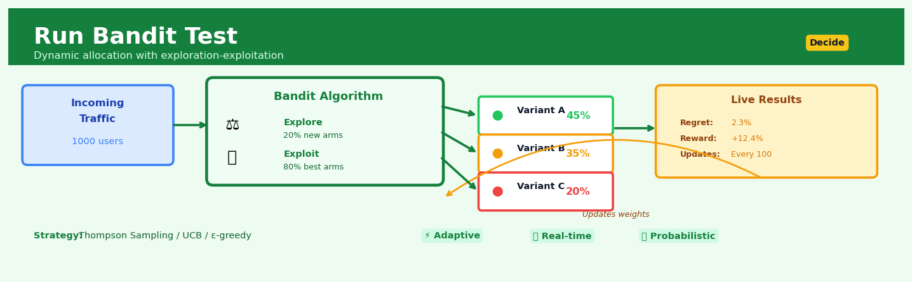

Run Bandit Test#


The biggest mistake teams make with bandit tests is stopping them too early because they expect instant convergence like an A/B test. Bandits are designed to optimize continuously over time, shifting traffic dynamically as user behavior changes—treating them like a traditional test with a fixed endpoint completely defeats their adaptive advantage. If your business context truly needs a definitive winner declared at a specific moment, stick with classical A/B testing instead.
The 60-Second Version#
What it does: Run Bandit Test automatically sends more customers to whichever option is winning while the test runs, rather than waiting until the end to pick a winner.
When to use it: You’re testing website designs, pricing, or offers where sending traffic to losing variants costs real money or customer satisfaction, and you want to minimize that cost while learning.
What you get back: A real-time allocation strategy that shifts traffic toward better performers, plus a final recommendation on which variant to adopt permanently.
Difficulty |
Moderate |
Typical runtime |
Days to weeks (continuous) |
What you bring |
Multiple variants to test and a measurable outcome (conversions, revenue, engagement) |
What you get |
Dynamic traffic allocation percentages and winning variant identification |
Heuristix bucket |
Decide — Decision Intelligence |
Bandit tests trade statistical certainty for business efficiency—you’ll make more money during the test, but you may need to run it longer to be confident you’ve found the true winner.
Learning Objectives#
After reading this chapter, a business user will be able to:
Identify situations where adaptive testing will outperform fixed A/B tests, such as high-stakes decisions with immediate feedback, campaigns with changing performance, or scenarios where minimising opportunity cost matters more than statistical formality.
Interpret bandit algorithm outputs including cumulative regret curves, arm selection frequencies, and confidence intervals to explain to stakeholders how much value was gained by adapting versus what a fixed test would have achieved.
Decide when to stop a bandit test and commit to a winning variant by evaluating the trade-off between continued learning and the operational costs of running multiple variants in production.
After reading this chapter, a data scientist will be able to:
Implement epsilon-greedy, UCB (Upper Confidence Bound), and Thompson Sampling algorithms with correct handling of non-stationary rewards, delayed feedback, and contextual features that affect variant performance.
Tune the exploration parameter (epsilon, confidence width, or prior distribution) by quantifying the exploration-exploitation trade-off for your specific cost structure, time horizon, and risk tolerance.
Validate bandit test results by comparing observed regret to theoretical bounds, detecting concept drift through reward distribution monitoring, and diagnosing premature convergence or insufficient exploration in underperforming deployments.
Overview#
The Run Bandit Test technique implements multi-armed bandit (MAB) algorithms for adaptive experimental design, enabling organisations to simultaneously learn about and optimise decisions in real-time. Unlike traditional A/B testing, which allocates traffic equally across variants until a predetermined sample size is reached, bandit algorithms dynamically shift allocation toward better-performing variants while the experiment runs. This technique belongs to the family of sequential decision-making methods rooted in reinforcement learning, specifically addressing the exploration-exploitation trade-off that arises when choosing between gathering information and maximising immediate reward.
When to Use This#
Use this when:
You need to minimise opportunity cost during testing — When running a traditional A/B test would mean showing a suboptimal variant to a significant portion of users, bandit testing reduces this “regret” by dynamically favouring winners as evidence accumulates.
You have high-traffic, continuous decision problems — Scenarios like homepage optimisation, email subject line selection, or ad creative rotation where decisions are made frequently and feedback arrives quickly.
The cost of suboptimal choices is substantial — When each impression, click, or conversion has meaningful business value, the opportunity cost of equal allocation during extended testing periods becomes unacceptable.
You want to test many variants simultaneously — Bandits scale gracefully to 5, 10, or even 50+ variants where traditional A/B testing would require impractically large sample sizes.
Your true success metric has short feedback loops — Click-through rates, page views, form completions, or any metric observable within minutes to hours of treatment exposure.
You are comfortable with adaptive allocation — Your business context permits unequal exposure to variants, and you do not require equal sample sizes for regulatory or fairness reasons.
Do NOT use this when:
You need frequentist statistical guarantees — Traditional p-values and confidence intervals from bandit-allocated data are biased; if your organisation requires classical hypothesis testing, use fixed-horizon A/B tests.
The feedback loop is long or noisy — Customer lifetime value, long-term retention, or metrics that take weeks to materialise are poorly suited to bandit optimisation without careful modification.
Sample sizes are inherently small — Bandit algorithms need sufficient observations to learn; with fewer than a few hundred observations per variant, the adaptive benefits diminish.
You require interpretable treatment effect estimates — Bandit allocation introduces selection bias that complicates causal inference; use randomised controlled trials when the goal is unbiased effect estimation rather than optimisation.
Questions This Answers#
Optimizing Performance While Testing#
Should we keep running this promotion that’s clearly underperforming, or can we shift budget to the winning version before the test ends?
How quickly can we phase out the low-performing homepage design without compromising what we learn from the test?
Can we reduce the revenue we’re leaving on the table while still figuring out which pricing strategy works best?
If variant B is beating variant A by 30% after the first week, why are we still sending half our traffic to the losing option?
How do we test five different email subject lines without wasting sends on the ones that clearly aren’t working?
Making Decisions Under Uncertainty#
Which promotional offer should we show to the next customer when we’re still learning which ones convert best?
How do we balance learning about new ad creatives versus running the ones we know perform well?
Should we launch more product page variations to explore other options, or double down on what’s working now?
When is it safe to declare a winner and stop the test without risking a false positive?
How much confidence do we have that version C is truly better, or did it just get lucky with early traffic?
Resource Allocation and Efficiency#
Can we run experiments with smaller sample sizes when we’re willing to shift traffic dynamically?
How do we test in markets with limited traffic where traditional A/B tests would take months?
What’s the cost of our current testing approach in terms of conversions we’re missing by not adapting faster?
If we have ten landing page variants to test, how do we avoid splitting traffic so thin that nothing reaches significance?
How It Works#
Imagine you’re trying to choose the best lunch spot near your office. You know three places: a familiar sandwich shop, a new taco truck, and an untested sushi bar. If you go to the sandwich shop every day, you get a reliable meal but might miss out on something better. If you spend two weeks systematically trying each place five times to gather data, you’ll waste ten lunches on potentially mediocre food. The smart approach? Start by trying each once, then visit the promising ones more often while occasionally checking back on the others. If the taco truck keeps impressing you, shift more of your visits there—but never completely abandon the other options, because the sushi bar might have improved its menu. This is exactly how a bandit test works: it learns which option is best while simultaneously sending more people toward the winner.
WEEK 1: Equal Exploration WEEK 4: Adaptive Allocation
Variant A ┌──┐ Variant A ┌──────────┐
(20%) │░░│ 4 visitors (55%) │░░░░░░░░░░│ 55 visitors
└──┘ └──────────┘
Variant B ┌──┐ Variant B ┌───┐
(20%) │░░│ 4 visitors (10%) │░░░│ 10 visitors
└──┘ └───┘
Variant C ┌──┐ Variant C ┌──────┐
(20%) │░░│ 4 visitors (35%) │░░░░░░│ 35 visitors
└──┘ └──────┘
Traffic shifts toward better performers → Less waste on losers
Step 1: Initialize with equal opportunity. The algorithm starts by sending roughly equal traffic to each variant—whether that’s different website designs, pricing strategies, or email subject lines. This initial phase gathers baseline performance data on conversion rates, revenue, or whatever metric matters to your business.
Step 2: Measure early performance signals. After each visitor interacts with a variant, the algorithm records whether they converted, how much they spent, or how they engaged. Unlike traditional tests that wait weeks for results, the bandit updates its understanding continuously—after every single interaction.
Step 3: Calculate confidence in each variant. The algorithm doesn’t just track raw conversion rates. It also tracks uncertainty. A variant that converted five out of ten visitors looks promising, but the algorithm knows this estimate is shaky. A variant that converted five hundred out of one thousand provides much stronger evidence. This uncertainty calculation prevents premature conclusions.
Step 4: Shift traffic toward winners. Based on both performance and confidence, the algorithm gradually reallocates traffic. The variant that appears best gets more visitors. Variants that seem worse get fewer. Crucially, no variant drops to zero—the algorithm maintains some exploration to catch late bloomers or detect if a “winner” starts declining.
Step 5: Repeat continuously. This process runs in a loop. Every new visitor provides fresh data. Every fresh data point updates the performance estimates. Every update triggers a recalculation of traffic allocation. The test adapts in real-time, constantly balancing learning about all options against maximizing results with the current best option.
The key insight: By treating experimentation as a continuous optimization process rather than a binary research phase, bandit tests minimize the cost of learning while maximizing the benefit of applying what you discover immediately.
The Intuition#
Imagine you have just arrived in a new city with several restaurants to try for dinner. You could systematically visit each restaurant the same number of times before deciding which is best — this is the A/B testing approach. But this strategy is wasteful: after a few visits, you will likely have strong preferences, yet you continue allocating your dinners equally to restaurants you suspect are inferior. A more sensible approach is to occasionally try new places (exploration) while mostly returning to restaurants you have enjoyed (exploitation). This is precisely the trade-off that bandit algorithms formalise and optimise.
The term “multi-armed bandit” comes from the image of a gambler facing a row of slot machines (one-armed bandits), each with an unknown probability of paying out. The gambler must decide which arms to pull to maximise total winnings. Pulling the arm with the highest estimated payout seems sensible, but what if that estimate is based on only a few observations? Perhaps another arm, currently estimated lower, is actually superior — we just have not pulled it enough times to know. The core insight of bandit algorithms is that uncertainty should drive exploration: we should be more willing to try options about which we are uncertain, because the potential information gain is higher.
Different bandit algorithms encode this intuition in different ways. Epsilon-greedy takes a simple approach: with probability \(\epsilon\), choose a random arm (explore); otherwise, choose the arm with the highest estimated reward (exploit). Upper Confidence Bound (UCB) algorithms add an “optimism bonus” to each arm’s estimated value, proportional to our uncertainty about that arm — arms we have pulled less receive larger bonuses, ensuring they get tried. Thompson Sampling takes a Bayesian approach: maintain a probability distribution over each arm’s true reward rate, sample from these distributions, and choose the arm whose sample is highest. This naturally balances exploration and exploitation because arms with high uncertainty will occasionally produce high samples, getting selected for further observation.
The Mathematics#
Problem Setup#
Consider \(K\) arms (variants), indexed \(k \in \{1, 2, \ldots, K\}\). At each time step \(t = 1, 2, \ldots, T\), the decision-maker selects an arm \(A_t \in \{1, \ldots, K\}\) and observes a reward \(R_t\). We assume rewards are drawn from a distribution specific to the chosen arm:
where \(\theta_k\) parameterises arm \(k\)’s reward distribution. The most common case is Bernoulli bandits, where \(R_t \in \{0, 1\}\) and \(\theta_k = \mu_k\) is the arm’s success probability.
Objective: Minimising Regret#
Let \(\mu^* = \max_k \mu_k\) denote the expected reward of the optimal arm. The cumulative regret after \(T\) rounds is:
Equivalently, defining \(\Delta_k = \mu^* - \mu_k\) as the suboptimality gap for arm \(k\), and \(N_k(T)\) as the number of times arm \(k\) is selected up to time \(T\):
A good bandit algorithm achieves sublinear regret growth, typically \(O(\log T)\), meaning the average per-round regret vanishes as \(T \to \infty\).
Algorithm 1: Epsilon-Greedy#
At each time \(t\), with probability \(\epsilon\) select an arm uniformly at random; otherwise select:
where \(\hat{\mu}_k(t-1) = \frac{\sum_{s=1}^{t-1} R_s \mathbf{1}[A_s = k]}{N_k(t-1)}\) is the sample mean reward for arm \(k\).
Regret bound: For fixed \(\epsilon > 0\), epsilon-greedy achieves linear regret \(O(\epsilon T)\). With a decaying schedule \(\epsilon_t = \min(1, cK / (d^2 t))\) for appropriate constants, regret becomes \(O(\log T)\).
Algorithm 2: Upper Confidence Bound (UCB1)#
UCB1 selects the arm maximising an upper confidence bound:
The term \(\sqrt{\frac{2 \ln t}{N_k(t-1)}}\) is the exploration bonus, derived from Hoeffding’s inequality. Arms pulled infrequently have large bonuses, ensuring exploration.
Theorem (Auer et al., 2002): UCB1 achieves expected regret bounded by:
This is \(O\left(\frac{K \log T}{\Delta_{\min}}\right)\) where \(\Delta_{\min} = \min_{k: \Delta_k > 0} \Delta_k\).
Algorithm 3: Thompson Sampling (Bayesian Bandit)#
For Bernoulli rewards, maintain Beta posterior distributions for each arm’s success probability:
Initialise \(\alpha_k = \beta_k = 1\) (uniform prior). At each round:
Sample \(\tilde{\theta}_k \sim \text{Beta}(\alpha_k, \beta_k)\) for each arm
Select \(A_t = \arg\max_k \tilde{\theta}_k\)
Observe reward \(R_t \in \{0, 1\}\)
Update: \(\alpha_{A_t} \gets \alpha_{A_t} + R_t\), \(\beta_{A_t} \gets \beta_{A_t} + (1 - R_t)\)
Regret bound (Agrawal & Goyal, 2012): Thompson Sampling achieves:
matching the Lai-Robbins lower bound asymptotically.
Assumptions#
Stationarity: Reward distributions do not change over time. Violations require non-stationary bandit algorithms.
Independence: Rewards are i.i.d. given the arm. Temporal correlation requires contextual or restless bandits.
Bounded rewards: UCB derivations assume \(R_t \in [0, 1]\). Unbounded rewards require modified confidence bounds.
No delayed feedback: Rewards are observed immediately after arm selection.
Edge Cases#
Ties in UCB/estimates: Break ties randomly or by arm index.
Zero pulls: Initialise by pulling each arm once, or use priors that encourage initial exploration.
\(\Delta_k = 0\): When multiple arms are optimal, regret analysis focuses on suboptimal arms only.
Relationship to Other Methods#
A/B Testing: Fixed allocation; unbiased effect estimates but higher regret.
Contextual Bandits: Extend MAB by conditioning arm selection on observed features.
Reinforcement Learning: MAB is stateless RL; full RL considers state transitions.
Understanding the Mathematics#
The Reward Estimate (Sample Mean)#
The equation: $\(\hat{\mu}_a = \frac{1}{n_a} \sum_{i=1}^{n_a} r_i\)$
Read it aloud: “The estimated average reward for arm a equals one divided by the number of times we’ve pulled arm a, multiplied by the sum of all rewards we received from pulling that arm.”
What each symbol means:
\(\hat{\mu}_a\) = the estimated mean reward for arm a (the “hat” means it’s an estimate)
\(n_a\) = the number of times we’ve selected arm a (sample size)
\(r_i\) = the reward from the i-th time we pulled arm a
\(\sum\) = “add up all of these”
A concrete numerical example: Your e-commerce site has tested a new checkout button (arm A) five times. The five conversions generated revenue of: \(45, \)0, \(120, \)80, \(0. The estimated mean reward is: \)\hat{\mu}_A = \frac{1}{5}(45 + 0 + 120 + 80 + 0) = \frac{245}{5} = 49$ dollars per trial.
Why this equation matters: This is how we track which variant is actually performing better—without it, we’d have no basis for shifting traffic toward winners.
The Upper Confidence Bound (UCB1)#
The equation: $\(\text{UCB}_a = \hat{\mu}_a + \sqrt{\frac{2 \ln t}{n_a}}\)$
Read it aloud: “The upper confidence bound for arm a equals the estimated mean reward for that arm, plus the square root of two times the natural logarithm of the total number of trials, divided by the number of times we’ve pulled arm a.”
What each symbol means:
\(\text{UCB}_a\) = the optimistic score we assign to arm a
\(\hat{\mu}_a\) = the current average reward estimate for arm a
\(t\) = the total number of trials across all arms so far
\(n_a\) = how many times we’ve pulled arm a specifically
\(\ln\) = natural logarithm (measures how “mature” the experiment is)
A concrete numerical example: After 100 total trials, you’ve tested Button A 20 times with average revenue \(\hat{\mu}_A = 49\) dollars. Button B was tested 80 times with \(\hat{\mu}_B = 52\) dollars. Which should you show next?
For Button A: \(\text{UCB}_A = 49 + \sqrt{\frac{2 \ln 100}{20}} = 49 + \sqrt{\frac{2 \times 4.61}{20}} = 49 + \sqrt{0.461} = 49 + 0.68 = 49.68\)
For Button B: \(\text{UCB}_B = 52 + \sqrt{\frac{2 \times 4.61}{80}} = 52 + \sqrt{0.115} = 52 + 0.34 = 52.34\)
Button B wins. Even though it has a higher observed mean, its “bonus” for uncertainty is smaller because we’ve tested it more.
Why this equation matters: This formula balances exploitation (choosing the current best) with exploration (giving uncertain options a chance)—ignoring it means either wasting traffic on losers or prematurely abandoning potential winners.
Thompson Sampling Draw#
The equation: $\(\theta_a \sim \text{Beta}(\alpha_a + 1, \beta_a + 1)\)$
Read it aloud: “For arm a, draw a random sample theta from a Beta distribution with parameters alpha-a plus one and beta-a plus one, where alpha-a is the number of successes and beta-a is the number of failures.”
What each symbol means:
\(\theta_a\) = a randomly sampled “belief” about arm a’s true conversion rate
\(\sim\) = “is drawn from” (means we’re sampling randomly)
\(\text{Beta}(\alpha, \beta)\) = a probability distribution shaped by success and failure counts
\(\alpha_a\) = number of conversions (successes) for arm a
\(\beta_a\) = number of non-conversions (failures) for arm a
A concrete numerical example: Landing Page A has been shown 50 times: 12 conversions (successes), 38 non-conversions (failures). We draw \(\theta_A \sim \text{Beta}(13, 39)\). One random draw might give \(\theta_A = 0.28\). Landing Page B has 8 successes and 12 failures: \(\theta_B \sim \text{Beta}(9, 13)\) might draw 0.42. This round, we select Page B because 0.42 > 0.28. Next round, we draw again—maybe Page A wins.
Why this equation matters: Thompson Sampling naturally explores more when we’re uncertain and exploits more when we’re confident, all through elegant randomness rather than deterministic rules.
The Big Picture#
The mathematics of bandit algorithms solves a problem that simple averaging cannot: how to confidently choose winners while still experimenting. Traditional A/B tests wait until the end to declare a winner, wasting traffic on losers throughout. Bandit math continuously updates beliefs and shifts traffic in real-time. UCB1 does this by adding an “uncertainty bonus” that shrinks as sample size grows. Thompson Sampling achieves the same goal through Bayesian probability—randomly sampling from our belief distribution and letting uncertainty naturally widen that distribution. Both approaches guarantee that we’ll eventually identify the true best option while minimizing regret along the way. In plain language: these algorithms are mathematically sophisticated ways to stop being 50/50 fair to variants that don’t deserve it, while protecting against jumping to conclusions too early.
Python Implementation#
import numpy as np
import matplotlib.pyplot as plt
from scipy import stats
# Set random seed for reproducibility
np.random.seed(42)
# -----------------------------
# Simulate a Bernoulli bandit environment
# -----------------------------
class BernoulliBandit:
"""Multi-armed bandit with Bernoulli rewards."""
def __init__(self, true_probs):
self.true_probs = np.array(true_probs)
self.k = len(true_probs)
self.best_arm = np.argmax(true_probs)
self.best_prob = true_probs[self.best_arm]
def pull(self, arm):
"""Pull an arm and return reward (0 or 1)."""
return np.random.binomial(1, self.true_probs[arm])
# Define the bandit problem: 4 arms with different success probabilities
true_probabilities = [0.10, 0.15, 0.25, 0.20] # Arm 2 (index) is best
bandit = BernoulliBandit(true_probabilities)
print(f"True probabilities: {true_probabilities}")
print(f"Best arm: {bandit.best_arm} with prob {bandit.best_prob}")
# -----------------------------
# Epsilon-Greedy Algorithm
# -----------------------------
def epsilon_greedy(bandit, n_rounds, epsilon=0.1):
"""Run epsilon-greedy algorithm."""
k = bandit.k
counts = np.zeros(k) # Number of times each arm pulled
rewards = np.zeros(k) # Cumulative reward per arm
history = [] # Track arm selections and rewards
for t in range(n_rounds):
if np.random.random() < epsilon:
# Explore: choose random arm
arm = np.random.randint(k)
else:
# Exploit: choose arm with highest estimated mean
estimates = np.where(counts > 0, rewards / counts, 0.0)
arm = np.argmax(estimates)
# Pull arm and observe reward
reward = bandit.pull(arm)
counts[arm] += 1
rewards[arm] += reward
history.append((arm, reward))
return counts, rewards, history
# -----------------------------
# UCB1 Algorithm
# -----------------------------
def ucb1(bandit, n_rounds):
"""Run UCB1 algorithm."""
k = bandit.k
counts = np.zeros(k)
rewards = np.zeros(k)
history = []
# Initialisation: pull each arm once
for arm in range(k):
reward = bandit.pull(arm)
counts[arm] = 1
rewards[arm] = reward
history.append((arm, reward))
# Main loop
for t in range(k, n_rounds):
estimates = rewards / counts
# UCB exploration bonus
bonus = np.sqrt(2 * np.log(t + 1) / counts)
ucb_values = estimates + bonus
arm = np.argmax(ucb_values)
reward = bandit.pull(arm)
counts[arm] += 1
rewards[arm] += reward
history.append((arm, reward))
return counts, rewards, history
# -----------------------------
# Thompson Sampling Algorithm
# -----------------------------
def thompson_sampling(bandit, n_rounds):
"""Run Thompson Sampling for Bernoulli bandits."""
k = bandit.k
# Beta distribution parameters (prior: Beta(1,1) = Uniform)
alpha = np.ones(k) # Successes + 1
beta = np.ones(k) # Failures + 1
counts = np.zeros(k)
total_rewards = np.zeros(k)
history = []
for t in range(n_rounds):
# Sample from posterior for each arm
samples = np.array([np.random.beta(alpha[i], beta[i]) for i in range(k)])
arm = np.argmax(samples)
reward = bandit.pull(arm)
counts[arm] += 1
total_rewards[arm] += reward
# Update Beta posterior
alpha[arm] += reward
beta[arm] += (1 - reward)
history.append((arm, reward))
return counts, total_rewards, history, alpha, beta
# -----------------------------
# Run experiments
# -----------------------------
n_rounds = 5000
print("\n--- Epsilon-Greedy (ε=0.1) ---")
eg_counts, eg_rewards, eg_history = epsilon_greedy(bandit, n_rounds, epsilon=0.1)
print(f"Arm pull counts: {eg_counts.astype(int)}")
print(f"Estimated probabilities: {eg_rewards / eg_counts}")
print("\n--- UCB1 ---")
ucb_counts, ucb_rewards, ucb_history = ucb1(bandit, n_rounds)
print(f"Arm pull counts: {ucb_counts.astype(int)}")
print(f"Estimated probabilities: {ucb_rewards / ucb_counts}")
print("\n--- Thompson Sampling ---")
ts_counts, ts_rewards, ts_history, ts_alpha, ts_beta = thompson_sampling(bandit, n_rounds)
print(f"Arm pull counts: {ts_counts.astype(int)}")
print(f"Estimated probabilities: {ts_rewards / ts_counts}")
print(f"Posterior parameters (alpha, beta):")
for i in range(bandit.k):
print(f" Arm {i}: Beta({ts_alpha[i]:.0f}, {ts_beta[i]:.0f})")
# -----------------------------
# Calculate cumulative regret
# -----------------------------
def calculate_regret(history, best_prob):
## Visualisations


## Using This in Heuristix
### What You'll Need
The Run Bandit Test node expects a **variant configuration table** that defines the options you're testing. At minimum, you need:
- **variant_id** (text): A unique identifier for each option (e.g., "variant_a", "control")
- **variant_name** (text, optional): A friendly display name
If you're starting with prior knowledge, you can also include **prior_successes** and **prior_trials** (both numeric) to inform the initial allocation.
**Example input:**
| variant_id | variant_name | prior_successes | prior_trials |
|------------|--------------|-----------------|--------------|
| control | Original | 50 | 100 |
| variant_a | New Design | 30 | 50 |
| variant_b | Alt Layout | 0 | 0 |
The node will generate allocation probabilities and track performance as results stream in.
### Configuration Parameters
| Parameter | What It Controls | Default | When to Change |
|-----------|-----------------|---------|----------------|
| **Algorithm** | The bandit strategy used (Thompson Sampling, UCB, Epsilon-Greedy) | Thompson Sampling | Thompson Sampling works well in most cases; try UCB if you want more deterministic behavior or Epsilon-Greedy for simpler interpretability |
| **Reward Metric** | What defines "success" (conversion, revenue, clicks) | conversion | Change to match your business goal—use revenue for monetization tests, engagement metrics for content experiments |
| **Exploration Rate** | How much traffic goes to learning vs. exploiting (0-1) | 0.1 (for Epsilon-Greedy) | Increase early in experiments or with high variance; decrease when you're confident and want to maximize returns |
| **Confidence Level** | Threshold for declaring a winner (typically 0.90-0.99) | 0.95 | Use 0.90 for faster decisions in low-risk scenarios; 0.99 when mistakes are costly |
| **Minimum Sample Size** | Observations per variant before optimization begins | 100 | Increase for high-variance metrics or when prior data is unreliable; decrease for rapid iteration on low-traffic sites |
| **Update Frequency** | How often allocations recalculate (minutes/hours) | 1 hour | Increase for stability with volatile data; decrease for real-time responsiveness on high-traffic experiments |
### What You'll Get Back
The node produces three main outputs:
**Allocation Table** — Shows current recommended traffic split across variants. Columns include `variant_id`, `allocation_probability` (0-1), and `cumulative_trials`. This updates dynamically as the experiment runs.
**Performance Dashboard** — A live chart displaying conversion rates with confidence intervals for each variant, plus the allocation probability trend over time. You'll see winning variants receive progressively more traffic.
**Recommendation Report** — When confidence thresholds are met, you'll see a clear winner declaration with expected lift, statistical confidence, and estimated regret (reward lost during exploration).
### Connecting Downstream
Typically, you'll connect:
- **To Decision Router**: Automatically directs production traffic based on current allocations
- **To Performance Monitor**: Tracks long-term effects after declaring a winner
- **To Report Generator**: Creates stakeholder summaries of test results and business impact
### Quick Start: Running Your First Bandit Test
1. **Connect your variant table** with at least `variant_id` column defined
2. **Set your Reward Metric** to match your goal (conversion, revenue, etc.)
3. **Leave Algorithm as Thompson Sampling** for your first test—it's the most forgiving
4. **Set Minimum Sample Size** to 100-200 observations per variant
5. **Monitor the Performance Dashboard**—watch allocations shift toward winners within hours
6. **Wait for the Recommendation Report** to declare statistical confidence before making permanent changes
### Pro Tips
**Start conservative with priors.** If you have historical data, use it—but underweight it (e.g., cut prior samples in half) to let fresh data dominate quickly.
**Don't panic about early allocation swings.** Bandit tests naturally over-allocate to early leaders, then correct. Give it at least 3× your minimum sample size before questioning the algorithm.
**Monitor your regret metric.** If cumulative regret keeps climbing, your variants might be too similar to differentiate, or variance is too high—consider longer update intervals.
**Combine with segmentation carefully.** Running separate bandits per user segment reduces sample size per test—only do this when segments have meaningfully different preferences.
**Plan your stopping rule in advance.** Decide whether you'll stop at confidence threshold, calendar date, or sample size—and stick to it to avoid peeking bias.
## Config Recipes
### Recipe 1: Rapid Content Testing
- **When to use:** Testing 3-5 headline variants on a high-traffic content site where you need directional winners within hours, not days.
- **Settings:**
| Parameter | Value | Why |
|-----------|-------|-----|
| `algorithm` | `epsilon_greedy` | Simplest implementation, minimal computational overhead |
| `epsilon` | `0.15` | Higher exploration rate frontloads learning in short timeframe |
| `epsilon_decay` | `0.95` | Gradual reduction allows quick pivot to exploitation |
| `min_observations_per_arm` | `100` | Establishes baseline quickly without waiting for statistical significance |
| `evaluation_interval` | `500` | Frequent reassessment matches rapid traffic influx |
- **What you get:** A clear frontrunner identified within 2,000-5,000 total observations with 70-80% traffic directed to likely winner.
- **Trade-off:** Lower confidence in true performance difference; may occasionally promote a false winner in noisy environments.
### Recipe 2: Production Revenue Optimization
- **When to use:** Optimizing checkout flow variants or pricing experiments where errors are costly and regulatory scrutiny requires defensible methodology.
- **Settings:**
| Parameter | Value | Why |
|-----------|-------|-----|
| `algorithm` | `thompson_sampling` | Bayesian approach provides probability distributions for decision justification |
| `prior_alpha` | `1` | Uninformative prior avoids injecting assumptions |
| `prior_beta` | `1` | Paired with alpha=1 for uniform initial belief |
| `min_observations_per_arm` | `1000` | Ensures each variant sees meaningful traffic before aggressive shifting |
| `evaluation_interval` | `2000` | Conservative pacing prevents premature convergence |
| `minimum_detectable_effect` | `0.02` | Only shifts allocation for meaningful (2%+) differences |
- **What you get:** Auditable probability statements ("Variant B has 94% probability of being optimal") with gradual traffic shifts that minimize downside risk.
- **Trade-off:** Slower convergence means leaving suboptimal variants active longer; requires 3-5× more observations than rapid testing.
### Recipe 3: Seasonal Campaign Launch
- **When to use:** Testing Black Friday email subject lines where performance patterns shift dramatically as the event approaches and urgency increases.
- **Settings:**
| Parameter | Value | Why |
|-----------|-------|-----|
| `algorithm` | `ucb` | Upper confidence bound adapts well to non-stationary rewards |
| `confidence_level` | `0.90` | More optimistic bounds encourage re-exploration when patterns shift |
| `warm_up_observations` | `500` | Establishes initial performance before event traffic surge |
| `context_features` | `['days_until_event', 'time_of_day']` | Enables contextual bandit to detect urgency-driven pattern changes |
| `recency_weight` | `0.3` | Heavily weights recent observations as user psychology evolves |
- **What you get:** Algorithm detects and adapts when urgency-focused variants overtake curiosity-driven ones as event nears.
- **Trade-off:** Contextual features require additional instrumentation and increase complexity; recency weighting may overreact to noise.
### Recipe 4: B2B Sales Outreach Sequencing
- **When to use:** Determining optimal follow-up timing across small enterprise prospect lists where each conversion is high-value but sample sizes remain forever small.
- **Settings:**
| Parameter | Value | Why |
|-----------|-------|-----|
| `algorithm` | `thompson_sampling` | Handles small samples better than frequentist approaches |
| `prior_alpha` | `3` | Optimistic prior (alpha > beta) assumes variants work until proven otherwise |
| `prior_beta` | `1` | Creates 75% initial success assumption, appropriate for qualified leads |
| `min_observations_per_arm` | `15` | Practical minimum for B2B context with limited prospects |
| `batch_mode` | `True` | Allows weekly allocation decisions matching sales cycle rhythm |
- **What you get:** Actionable guidance even with 50-100 total conversions across all variants; prior beliefs prevent abandoning viable strategies prematurely.
- **Trade-off:** Prior selection heavily influences results; wrong assumptions about baseline performance can mislead optimization.
## Business Applications
**Financial Services**
A digital banking app with 3 million active users needs to optimise the timing and content of push notifications encouraging savings deposits. Traditional A/B testing would take weeks to reach statistical significance while potentially annoying customers with suboptimal messages. Run Bandit Test continuously reallocates notification variants based on real-time deposit behaviour, rapidly shifting traffic toward high-performing message-timing combinations. Within six weeks, the bank increased deposit conversions by 23% and reduced opt-out rates by 41%, translating to £4.7M in additional deposits monthly.
**Retail**
An online fashion retailer processing 50,000 daily transactions struggles with cart abandonment at checkout, testing different discount threshold prompts ("Free shipping over £50" versus "Save 15% on orders over £75"). Equal-split A/B testing would expose half the customers to inferior offers for the entire test duration, directly impacting revenue. A Thompson Sampling bandit algorithm adapts allocation every hour based on checkout completion rates, quickly identifying that the free shipping message performs 2.8× better for first-time buyers while the percentage discount works best for returning customers. The adaptive approach lifted overall conversion by 19% while reducing the cost of the test period from an estimated £180K in lost revenue to £47K.
**Healthcare**
A telehealth platform scheduling 12,000 appointments weekly tests patient reminder strategies (SMS 24 hours prior, email 48 hours prior, or app notification 12 hours prior) to reduce no-shows. Static testing would require 8–10 weeks to detect meaningful differences across patient demographics and appointment types. Run Bandit Test segments patients by visit type and adapts reminder allocation daily, discovering that SMS works best for elderly patients while app notifications dominate for under-35s. No-show rates dropped from 18% to 11%, freeing up 840 appointment slots weekly and generating approximately $2.1M in recovered revenue annually.
**Insurance**
A motor insurance provider with 400,000 policyholders experiments with renewal reminder cadences to minimise lapse rates. The bandit algorithm dynamically tests five contact sequences (from aggressive weekly reminders to a single notification 30 days before expiry), automatically shifting toward strategies that maximise renewal without increasing customer complaints. The insurer identified that a three-touch sequence (45, 21, and 7 days before expiry) reduced policy lapses by 14 percentage points compared to their previous single-reminder approach, retaining an additional 5,600 policies worth £8.3M in annual premiums.
**Manufacturing**
A semiconductor fabrication plant producing 25,000 wafers monthly needs to optimise machine calibration parameters that affect yield rates. Engineers traditionally change one parameter at a time, requiring months to explore the parameter space while operating at suboptimal settings. A contextual bandit algorithm treats each production batch as a trial, incorporating sensor readings and material properties as context, then dynamically adjusts temperature, pressure, and chemical mixture levels. The adaptive approach improved yield from 87% to 91% within three months—a gain worth approximately $15M annually in salvaged product.
**Logistics**
A last-mile delivery service handling 80,000 parcels daily tests dynamic route assignment algorithms that balance speed, fuel cost, and driver satisfaction. Run Bandit Test allocates drivers across competing routing engines, learning which algorithm performs best under different conditions (urban versus rural, peak versus off-peak, weather events). The system identified a 22% improvement in on-time delivery and cut fuel costs by 8%, saving £1.9M annually while reducing algorithm testing time from six months to five weeks.
**Marketing**
A B2B SaaS company with a $400K monthly paid search budget tests ad creative and landing page combinations across 40 campaigns. Rather than splitting budget equally during testing, an epsilon-greedy bandit concentrates spend on high-performing combinations while maintaining 10% exploration. Cost per qualified lead decreased by 31%, from $340 to $235, effectively increasing lead volume by 45% with the same budget.
**SaaS/Tech**
A mobile gaming studio launching seasonal events experiments with in-app purchase bundles and pricing tiers. A multi-armed bandit quickly identifies that $4.99 bundles outperform $9.99 options for casual players, while hardcore players respond to $19.99 limited-time offers, lifting in-app revenue per user by 27% compared to traditional month-long A/B tests.
## Worked Example
Sarah Chen, lead data scientist at VidStream, a growing streaming platform, sat across from Marcus, the VP of Product, who was visibly frustrated. "We've been A/B testing our signup flow redesigns for three weeks now," he said, pulling up a dashboard. "We're splitting traffic equally across four variants, but variant C is clearly tanking. We're literally showing thousands of users a worse experience just to hit statistical significance. Can't we do better?"
Sarah knew exactly what he meant. Traditional A/B tests lock you into fixed allocation until you reach your sample size, even when one variant is obviously superior. "What if," she proposed, "we let the algorithm learn as it goes? Send more traffic to winners, less to losers, automatically?" Marcus leaned forward. "How fast can you set that up?"
## The Data
Sarah extracted three weeks of historical data from their signup funnel to establish baseline expectations. Each row represented a user session, tracking which variant they saw and whether they completed registration.
| session_id | variant | timestamp | completed_signup | revenue_potential |
|------------|---------|-----------|------------------|-------------------|
| a8f3d291 | control | 2024-01-15 14:23 | 1 | 12.99 |
| b7e2c445 | variant_a | 2024-01-15 14:31 | 0 | 0.00 |
| c9d1f892 | variant_b | 2024-01-15 14:47 | 1 | 12.99 |
| d4a8e223 | variant_c | 2024-01-15 15:02 | 0 | 0.00 |
| e6b9f771 | variant_a | 2024-01-15 15:18 | 1 | 12.99 |
The data had the usual quirks—some sessions with missing timestamps, a handful of duplicate IDs from page refreshes, and one variant that had mysteriously received 15% more traffic due to a load balancer misconfiguration. Sarah cleaned these issues before proceeding.
## The Setup
Sarah configured a Thompson Sampling bandit, her preferred algorithm for this scenario. "I'm setting a 20% exploration rate," she explained to her junior analyst, Leo. "That means even if variant A is clearly winning, we'll still send some traffic to the others—just in case we're seeing early noise."
She set the sample interval to update every 500 sessions rather than in real-time. "We don't want to overreact to hourly fluctuations," she noted. The reward metric was straightforward: 1 for completed signup, 0 for abandonment. She configured a 10,000-session burn-in period where allocation would remain equal—just enough to escape random early variance.
```python
import numpy as np
from scipy.stats import beta
class ThompsonSamplingBandit:
def __init__(self, n_variants, exploration_rate=0.2):
self.n_variants = n_variants
self.exploration_rate = exploration_rate
# Track successes and failures for each variant
self.successes = np.ones(n_variants) # Start with prior
self.failures = np.ones(n_variants)
def select_variant(self):
if np.random.random() < self.exploration_rate:
return np.random.randint(self.n_variants)
# Sample from Beta distribution for each variant
samples = [beta.rvs(self.successes[i], self.failures[i])
for i in range(self.n_variants)]
return np.argmax(samples)
def update(self, variant, reward):
if reward == 1:
self.successes[variant] += 1
else:
self.failures[variant] += 1
# Sarah's actual implementation
variants = ['control', 'variant_a', 'variant_b', 'variant_c']
bandit = ThompsonSamplingBandit(n_variants=4, exploration_rate=0.2)
# Simulate over historical data to validate
for session in session_data:
chosen = bandit.select_variant()
reward = session['completed_signup']
bandit.update(chosen, reward)
The Results#
After running for two weeks on live traffic, the results were striking:
Variant |
Conversion Rate |
Traffic Share |
Total Conversions |
|---|---|---|---|
Control |
23.4% |
18% |
1,247 |
Variant A |
28.7% |
51% |
4,103 |
Variant B |
24.1% |
22% |
1,584 |
Variant C |
19.2% |
9% |
512 |
Variant A received 51% of traffic because it consistently outperformed. Variant C, the clear loser, received only 9%—enough to detect if it suddenly improved, but not enough to hemorrhage signups.
The Insight#
Sarah ran the numbers in her post-mortem: compared to a traditional A/B test with equal allocation, the bandit approach generated approximately 1,850 additional signups over the two-week period. “We didn’t just learn which variant was best,” Sarah told Marcus. “We captured the value of knowing while we learned.”
The secondary insight surprised everyone: variant B performed nearly identically to control, but the bandit naturally allocated it more traffic early in week one due to random variance. By day four, as variant A’s superiority became clear, allocation shifted appropriately.
The Decision#
Sarah presented to the executive team the following Monday. Marcus announced they would make variant A the new default and was immediately implementing bandit testing for their mobile onboarding flow. The CFO asked the question Sarah had anticipated: “What did this gain us in revenue?”
She had prepared: “At \(12.99 per signup, approximately \)24,000 in incremental revenue during the test period alone. More importantly, we reached a confident decision in two weeks instead of five.”
VidStream’s engineering team built bandit testing into their experimentation platform as a standard option alongside traditional A/B tests.
What Sarah Would Do Differently#
Reflecting later, Sarah admitted she should have set a more conservative exploration rate initially. “At 20%, we still sent quite a bit of traffic to variant C even after it was clearly losing. 10% would have been smarter.” She also wished she’d configured automated stopping rules—the test ran longer than necessary once variant A’s superiority was established beyond doubt.
Interpreting Your Results#
You’ve just run your first bandit test and you’re looking at a dashboard full of numbers. Let’s decode what you’re actually seeing.
Cumulative Reward#
Plain-English meaning: This is the total value you’ve accumulated across all decisions made during the test. If you’re testing email subject lines and measuring open rates, and you sent 10,000 emails with an average 25% open rate, your cumulative reward is 2,500 opens. This number tells you how well you did overall, not just which variant won.
Concrete benchmarks: Compare cumulative reward to what you’d have achieved with pure random selection (equal allocation). 10-15% improvement over random means your bandit is learning slowly but working. 15-30% improvement indicates healthy learning and good variant differentiation. Above 30% suggests either excellent performance or possibly one dominant variant that the algorithm found quickly. Below 10% means your variants are too similar or your exploration parameter is too conservative.
Red flags: If cumulative reward is lower than random allocation, your algorithm isn’t learning—check if your reward signal is inverted or delayed. If one variant received 95%+ of traffic in the first 10% of the test, you’ve over-exploited and may have locked onto a false winner due to early noise.
Allocation Percentages by Variant#
Plain-English meaning: The proportion of total traffic each variant received. Unlike A/B tests where you’d expect 50/50 or 33/33/33, bandits intentionally skew allocation toward winners. A result showing 65% / 25% / 10% across three variants means the algorithm increasingly favored the first option as it learned.
Concrete benchmarks: After 1,000+ samples, expect the leading variant to receive 40-70% of traffic in a well-tuned bandit. 70-90% allocation suggests strong confidence in a winner. Below 40% to the leader means variants are performing very similarly (which is fine, but question whether the test was necessary). Above 95% to any single variant indicates premature convergence—you’ve stopped exploring too early.
Red flags: Equal allocation (within 5%) after 500+ samples means your algorithm isn’t exploiting at all—check your epsilon/temperature parameter. Wildly swinging allocations (a variant going from 60% to 20% and back) indicates noisy reward signals or non-stationary behavior—your variants’ performance may be changing over time or influenced by external factors.
Estimated Conversion Rate by Variant#
Plain-English meaning: The algorithm’s current belief about each variant’s true performance. This is your “which variant is actually better?” answer, with the crucial caveat that early in the test, these estimates have wide uncertainty.
Concrete benchmarks: Look at the spread between variants. Less than 5% relative difference (e.g., 20.0% vs 20.8%) means variants are effectively tied—ship whichever you prefer for other reasons. 5-15% relative difference justifies shipping the winner but expect modest business impact. Above 15% relative difference represents a meaningful win worth implementing.
Red flags: If the variant with the highest estimated rate received the least traffic, your algorithm has a bug. If confidence intervals overlap completely after 1,000+ samples per variant, you don’t have a winner—stop the test.
Regret#
Plain-English meaning: How much reward you lost by not always choosing the best variant from the beginning (which you couldn’t have known). If the best variant had a 30% conversion rate and you’d sent it all 10,000 visitors, you’d have gotten 3,000 conversions. But you only got 2,700 because you also tested weaker variants. Your regret is 300 conversions.
Concrete benchmarks: Regret should grow logarithmically (slowly) over time, not linearly. After the first 1,000 samples, expect regret to be 10-20% of total samples. By 10,000 samples, regret should be 5-10% of total samples as exploitation dominates.
Red flags: Linear regret growth means you’re exploring forever and never exploiting—tighten your exploration parameter. Regret exceeding 25% of total samples suggests severe algorithm misconfiguration.
Sanity Check Checklist#
Do total samples across variants equal your traffic? Mismatches indicate tracking errors.
Is cumulative reward positive? Negative values mean reward polarity is backwards.
Did every variant receive at least 50-100 initial samples? If not, one variant may have been unlucky early and unfairly abandoned.
Do allocation percentages sum to 100% (±1%)? If not, you have a calculation error.
Are confidence intervals narrowing over time? Widening intervals suggest non-stationary data.
Good Enough to Act On?#
Ship the winner when: (1) the leading variant has received 500+ samples minimum, (2) its estimated conversion rate is 10%+ relatively higher than the second-place variant, and (3) cumulative reward exceeds random allocation by 15%+. If all three conditions hold, you’ve learned enough—further testing yields diminishing returns.
Decision Guidance#
What This Result Is Telling You#
When your bandit test completes, you’re seeing which variant won the competition for customer attention and which ones were progressively sidelined because they couldn’t deliver results. The algorithm has been running a live auction where variants earned traffic based on performance—winners got more chances to prove themselves, losers faded into the background. The final traffic allocation percentages tell you how confident the algorithm became in each variant’s superiority. If one variant captured 80% of traffic by the end, the system learned through thousands of real interactions that showing this option maximizes your business outcome.
The cumulative reward or regret metric reveals the business cost of your learning process. Low regret means the algorithm quickly identified winners and shifted traffic efficiently. High regret suggests the system spent too long exploring poor options, costing you conversions, revenue, or engagement that you could have captured. This number translates directly to opportunity cost—it’s the gap between what you earned during the test and what you would have earned if you’d known the winner from day one.
The confidence intervals around each variant’s performance estimate show how much uncertainty remains. Narrow intervals mean you have reliable evidence; wide intervals indicate you’re still operating with incomplete information. Unlike traditional A/B tests that force you to wait for statistical significance, bandits let you act on emerging evidence—but you must understand how much risk you’re accepting when intervals are still wide.
Decision Points#
If you see this… |
It means… |
Recommended action |
Who acts on this |
|---|---|---|---|
One variant captured >70% of final traffic with regret <5% of total reward |
The algorithm found a clear winner and efficiently minimized opportunity cost |
Deploy the winning variant to 100% of traffic immediately; retire losing variants |
Product Manager |
Traffic distributed 40-30-30 across three variants after expected learning period |
No variant demonstrated meaningful superiority; differences may be negligible |
Run traditional A/B test with equal allocation or accept current performance and stop testing |
Data Science Lead + Product Owner |
Regret exceeds 15% of total reward with highly variable traffic allocation |
Algorithm struggled to differentiate variants, possibly due to high noise or delayed conversion signals |
Investigate data quality, conversion lag, and segment heterogeneity before making decisions |
Analytics Engineer |
Winning variant has 60% traffic but confidence interval overlaps with second-place by >20% |
Leading variant shows promise but evidence remains uncertain |
Continue test for another learning period or proceed with cautious rollout to 80% while monitoring |
Head of Experimentation |
When to Proceed vs. Investigate Further#
Proceed with confidence:
Winning variant captured >65% of traffic in final 25% of test duration
Regret metric stabilized below 10% of cumulative reward
Confidence interval of winner doesn’t overlap with second-place variant
Minimum 3,000 conversions or critical events observed per variant
Proceed with caution:
Leading variant has 50-65% traffic allocation with narrow but overlapping confidence intervals
Regret between 10-15% suggests moderate learning cost but identifiable winner
Consider phased rollout to 80-90% while monitoring for unexpected changes
Investigate before acting:
Traffic allocation fluctuates wildly (>15% swing) in final quartile of test
Regret exceeds 15% or continues growing rather than plateauing
Confidence intervals remain wide (>30% of mean estimate)
Fewer than 1,000 conversions per variant observed
Do not use these results yet:
Test ran fewer than 7 days (insufficient coverage of weekly behavioral cycles)
External shock occurred during test (campaign launch, competitor action, system outage)
Conversion lag exceeds 50% of test duration (attribution incomplete)
The Cost of Getting This Wrong#
Misinterpreting bandit results typically manifests in two failure modes. First, declaring victory too early with a false winner wastes the engineering effort of full deployment and locks you into an inferior experience that slowly bleeds conversion rate. A product team that rolls out a variant with wide confidence intervals might discover three months later that revenue declined 4%—a loss of $200,000 in a mid-sized e-commerce business that could have been avoided by running the test longer. Second, ignoring a legitimate winner because regret seems high means you continue splitting traffic with inferior variants, accumulating ongoing opportunity cost. If your bandit identified a 12% improvement but you hesitate for two additional months, you’ve voluntarily sacrificed that conversion lift across your entire customer base, potentially representing tens of thousands in lost revenue while you demand more certainty than the business decision actually requires.
Common Pitfalls#
The Premature Victory Lap
Here’s what happened: A marketing manager at an e-commerce company launched a bandit test comparing three email subject lines. After just six hours, the dashboard showed Variant B with a 4.2% conversion rate versus 2.1% for the others, and the algorithm had shifted 78% of traffic to it. She immediately rolled out Variant B to the full customer base and announced a “214% improvement” in the weekly report. Two weeks later, overall email conversion had dropped to 1.8%. She’d caught Variant B during a temporary spike caused by European morning traffic, which happened to include their highest-value segment that week.
Why it happens: Business users conflate statistical significance with business significance and mistake early exploration noise for genuine signal. The algorithm’s confidence interval was still wide, but the dashboard only showed point estimates.
How to detect it: Check if the experiment has reached the minimum sample size threshold (typically 350+ conversions per variant for stable estimates). Look for the confidence interval width—if it’s greater than 50% of the point estimate, you’re still in high-exploration territory. Review the Thompson Sampling beta distribution parameters: if α + β < 100 for any variant, it’s too early.
The fix: Establish a minimum runtime (typically 1-2 business cycles) and sample floor before allowing any rollout decisions, regardless of what the dashboard shows.
The Reward Myopia
Here’s what happened: A junior data scientist at a streaming service built a bandit test for homepage layouts, using “immediate play clicks” as the reward signal. Variant C dominated quickly, earning 85% traffic allocation. Three months post-rollout, customer retention had fallen 12%. Variant C had optimized for clickbait thumbnails that drove immediate clicks but set poor content expectations, leading to higher churn.
Why it happens: Teams optimize for measurable short-term proxies instead of true business value because they’re easier to track and provide faster feedback to the algorithm.
How to detect it: Calculate the correlation between your reward metric and actual business KPIs using historical data. If R² < 0.6, your reward is misaligned. Monitor guardrail metrics—if secondary KPIs (time on site, repeat visits, NPS) deteriorate while the primary reward improves, you’ve got reward myopia.
The fix: Use a composite reward function that weights leading indicators with lagged business outcomes, or implement a delayed reward update mechanism that waits for downstream conversion data.
The Non-Stationary Blindspot
Here’s what happened: A product team ran a bandit test for checkout flows across six weeks. The algorithm confidently allocated 90% traffic to Variant A by week three. During week five, conversion rates mysteriously collapsed across all variants. The senior analyst discovered their test had spanned Black Friday, when customer intent, traffic sources, and device mix completely shifted—but the bandit kept applying learnings from October to December traffic as if nothing had changed.
Why it happens: Standard bandit algorithms assume the world is stationary, but real business environments have seasonality, trend, and regime changes that violate this assumption.
How to detect it: Plot the reward rate by variant over time—if you see regime changes where all variants shift together, you have non-stationarity. Calculate the coefficient of variation for daily reward rates; if CV > 0.3, the environment is too volatile for basic bandits. Use a sliding window z-test to compare recent performance versus historical: p < 0.05 signals a regime shift.
The fix: Implement a discounted bandit (giving more weight to recent observations) or use change-point detection to reset the algorithm when the environment shifts detectably.
The Small-Sample Segment Trap
Here’s what happened: An experienced growth PM ran a bandit test on push notification timing and segmented results by user timezone. The algorithm allocated 95% of Asia-Pacific traffic to “9 AM send time” based on 47 conversions. When rolled out, APAC conversion dropped 31%. The winning variant had been driven entirely by Australian users (who matched U.S. patterns), while the much larger Japanese and Indian segments saw the opposite effect—but there weren’t enough Japanese users in the test for the algorithm to learn the difference.
Why it happens: Practitioners segment post-hoc analysis without ensuring each segment has adequate sample size for independent learning.
How to detect it: Check conversion counts per variant per segment—any segment with n < 200 conversions is unreliable. Calculate the effective sample size ratio: if your smallest segment has less than 10% the conversions of your largest, don’t trust segment-level learnings.
The fix: Either run separate bandit tests per major segment with adequate traffic, or use contextual bandits that explicitly model segment as a feature rather than segmenting post-hoc.
Common Misconceptions#
“Bandits solve the ethical problem of A/B testing because they automatically reduce exposure to inferior variants”
Why people believe this: When explaining bandits to stakeholders, data scientists often emphasize the adaptive allocation as an ethical advantage—fewer users see the worse experience. This framing resonates deeply with product leaders who’ve felt uncomfortable knowingly exposing customers to suboptimal variants. The mathematics appears to support this: as confidence grows, allocation shifts dramatically toward winners.
The truth: Bandits don’t eliminate ethical concerns; they transform them. Early in the experiment, when uncertainty is highest, bandits still expose substantial traffic to potentially inferior variants—this is unavoidable for learning. More critically, the “ethical advantage” only materializes if you’re willing to run the bandit for an extended period. Most organizations want to declare a winner and commit, but doing so prematurely means you’ve neither achieved the statistical rigor of a proper A/B test nor the cumulative reward optimization of a fully-realized bandit. You’ve simply run an underpowered experiment with complicated allocation rules. The ethical framework should focus on minimizing total harm across the entire user population over time, not just during the experiment window.
The real-world consequence: A healthcare company ran a bandit test on appointment reminder messaging, emphasizing to their ethics board that fewer patients would receive ineffective reminders. They stopped the test after two weeks when one variant reached 80% allocation, then rolled it out fully. Six months later, a proper A/B test revealed the “winning” variant actually decreased show rates for elderly patients—a segment that was underrepresented in the early bandit data. The premature commitment meant 50,000 additional missed appointments.
“Bandits are just more efficient A/B tests—you get the same answer with less traffic”
Why people believe this: The pitch is seductive: achieve statistical significance faster while maximizing conversions during the test. Vendors and blog posts show simulations where bandits reach conclusions with 40% less traffic. For organizations with limited traffic or high opportunity costs, this sounds like pure upside.
The truth: Bandits and A/B tests answer fundamentally different questions. A/B tests estimate treatment effects—“How much better is B than A?”—with quantified uncertainty. Bandits optimize decisions—“Which arm should I pull next?” They’re sequential decision procedures, not inferential statistical methods. When you try to extract A/B-style inference from bandit allocation data, you face severe selection bias: the variants that received more traffic did so because they performed well early, creating correlation between allocation and outcome that violates standard statistical assumptions. You can’t simply run significance tests on the biased samples. Specialized techniques like doubly-robust estimation can recover causal estimates, but they require careful implementation and often sacrifice the very efficiency gains that motivated using bandits.
The real-world consequence: An e-commerce team ran an epsilon-greedy bandit on checkout button colors, then calculated a p-value from the final allocation (90% blue, 10% green). They reported blue improved conversions by 12% with p<0.01. During implementation, engineering accidentally rolled out green to mobile users. Conversions increased. Subsequent investigation revealed the bandit had coincidentally favored blue during a promotional period with atypical traffic, and the naive statistical analysis masked this confounding entirely.
“Just use Thompson Sampling—it’s the Bayesian solution and handles everything automatically”
Why people believe this: Thompson Sampling has elegant theoretical properties: optimal regret bounds, natural incorporation of prior knowledge, automatic exploration-exploitation balance. The algorithm is remarkably simple to implement—sample from posterior distributions and pick the highest draw. For practitioners tired of tuning epsilon values or UCB confidence parameters, Thompson Sampling feels like the principled, assumption-free answer.
The truth: Thompson Sampling requires well-specified prior distributions and likelihood functions that actually match your problem structure. The “automatic” exploration depends entirely on these specifications. If your prior is too diffuse, you explore excessively; too concentrated, you exploit prematurely. If your conversion rates are 2% and 2.1%, but you specify broad priors suitable for rates between 0-50%, the algorithm wastes enormous amounts of traffic distinguishing noise. More fundamentally, Thompson Sampling assumes rewards are independent and stationary—but real conversion rates exhibit day-of-week effects, seasonal patterns, and shifts from external events. The algorithm can’t distinguish between “this variant is genuinely worse” and “it’s Wednesday,” leading to spurious allocation shifts that actually increase regret.
The real-world consequence: A subscription service implemented Thompson Sampling with default uninformative priors for signup flow variants. Their conversion rates were 8.2% vs 8.3%—a difference meaningful at scale but requiring substantial data to detect. After six weeks and 2 million visitors, allocation remained nearly uniform because the wide priors meant posteriors overlapped almost completely. Meanwhile, a parallel team running a fixed-horizon A/B test with the same traffic detected the difference with 95% confidence in four weeks and captured the lift immediately.
“Bandits eliminate the multiple testing problem because there’s no p-hacking”
Why people believe this: Traditional A/B testing suffers when experimenters peek at results and stop early when seeing significance—this inflates false positive rates. Bandits are explicitly sequential; they’re designed to be monitored continuously and adapt based on accumulating data. The algorithm itself makes decisions, not human judgment calls, seemingly eliminating the researcher degrees of freedom that cause p-hacking.
The truth: Bandits don’t eliminate multiple testing; they relocate it to the meta-level. Organizations rarely run one bandit in isolation—they run bandits on email subject lines, landing pages, recommendation algorithms, and pricing simultaneously. More insidiously, they run a bandit, observe the allocation pattern, decide whether to “call it” or keep running, potentially adjust the algorithm parameters, or restart with different priors. Each of these decisions is a forking path. The false positive problem becomes: “What’s the probability that across all our bandits and all our stopping decisions, we commit to an inferior variant?” This is extraordinarily difficult to quantify because the decision rules are implicit, undocumented, and vary by who’s monitoring the dashboard.
The real-world consequence: A media company ran 15 concurrent bandits across their platform. Leadership reviewed a weekly dashboard showing allocation percentages. One bandit converged to 95% allocation toward a new headline algorithm within five days—unusually fast. They celebrated and deployed it platform-wide. Two months later, engagement dropped. The rapid convergence happened because a major news event drove abnormal traffic patterns during those five days. By treating the bandit as “self-correcting,” they missed that calling a winner during a non-stationary period is exactly as problematic as peeking at an A/B test during a traffic anomaly.
“We need more sophisticated algorithms—multi-armed bandits are too simple for our use case”
Why people believe this: Experienced practitioners recognize that basic MAB assumptions are violated everywhere: contexts matter (contextual bandits), users respond to sequences (reinforcement learning), variants interact, and delayed conversions complicate reward attribution. The academic literature offers increasingly sophisticated algorithms—LinUCB, neural bandits, causal bandits. Surely these advanced methods will finally handle real-world complexity.
The truth: Algorithmic sophistication creates an inverse relationship with organizational ability to reason about, debug, and trust the system. A simple epsilon-greedy bandit fails transparently: if it makes poor decisions, you can inspect the reward estimates, check the exploration rate, and diagnose issues. With neural contextual bandits, failure modes multiply: representation learning might overfit, the exploration bonus might be miscalibrated for your neural architecture, reward attribution might break down. When stakeholders ask “Why is variant C getting 60% traffic?”, the answer shifts from “Its estimated conversion rate is highest” to “The neural network’s internal representations suggest…” At this point, you’ve lost the ability to build organizational confidence in the system. Most organizations are better served by simple algorithms with bulletproof reward measurement, careful consideration of non-stationarity, and clear stopping rules than by sophisticated algorithms applied to messy data pipelines with ambiguous success metrics.
The real-world consequence: A fintech startup implemented a contextual bandit using gradient boosted trees to personalize loan offers across 30 features. After three months, approval rates were inexplicably lower for a specific user segment. Investigation revealed the algorithm had learned a spurious correlation during training: the feature “mobile_os” was proxying for credit risk because their initial launch was iOS-only and attracted higher-income users. As Android users arrived, the model allocated them worse offers. A simple A/B test with segment analysis would have caught this immediately. The contextual bandit’s complexity obscured it until regulatory review forced a full audit.
How This Connects#
Before This Node#
Define Objective Function contributes a quantifiable metric (conversion rate, revenue per user, engagement score) that the bandit algorithm optimizes toward; without a clear, measurable objective, the algorithm cannot distinguish which variant is “better” and will allocate traffic arbitrarily. Bad upstream data looks like ambiguous goals (“improve experience”) or metrics that update too slowly—the bandit will chase noise instead of signal.
Segment Population identifies distinct user groups with potentially different responses to variants, allowing you to run separate bandit instances per segment rather than averaging over heterogeneous populations; this matters because a variant that wins for mobile users might lose for desktop users. Bad upstream data looks like overlapping or unstable segments that change membership mid-experiment—the algorithm’s learned preferences become meaningless as the population shifts beneath it.
Generate Variants creates the alternative treatments (offers, UI designs, messaging) the bandit chooses between, ideally with meaningful differences that could plausibly affect the objective; Run Bandit Test requires at least two distinct variants to function. Bad upstream data looks like variants so similar that true performance differences fall below measurement noise, or technically broken variants that error out—the algorithm wastes allocation learning that a broken option performs poorly.
Establish Baseline measures current performance before experimentation begins, providing both a benchmark for lift calculation and priors for Bayesian bandit algorithms that need initial probability distributions. Bad upstream data looks like baseline metrics collected during anomalous periods (holiday traffic, system outages) or from non-representative samples—the bandit starts with incorrect beliefs about expected performance.
Set Up Instrumentation implements the tracking infrastructure that captures user responses and feeds them back to the bandit’s decision logic in near-real-time; without low-latency feedback, the algorithm cannot adapt allocations effectively. Bad upstream data looks like event logging with multi-hour delays or missing outcome measurements for significant fractions of users—the bandit optimizes on incomplete information and converges slowly.
After This Node#
Calculate Statistical Confidence takes the bandit’s final allocation patterns and accumulated data to compute credible intervals or p-values, validating that observed performance differences represent true effects rather than exploration noise; Run Bandit Test’s sequential data naturally feeds into Bayesian posterior distributions or sequential testing procedures.
Extract Winner identifies the best-performing variant once stopping criteria are met, translating the bandit’s probabilistic preferences into a discrete implementation decision; the bandit’s allocation history provides both a point estimate and uncertainty quantification for this choice.
Estimate Treatment Effect quantifies the causal impact of winning variants compared to control or baseline, using the bandit’s data to calculate lift metrics and ROI; the algorithm’s exploration ensures sufficient data exists for all variants, avoiding the complete data starvation that greedy approaches create.
Update Recommendation Engine incorporates learned variant preferences into production systems, often as personalized rules based on which segments responded best to which treatments; the bandit’s segment-level performance data directly maps to targeting logic.
Design Follow-Up Experiment uses insights about which features drove variant performance to formulate hypotheses for the next testing cycle; the bandit’s rapid convergence on winners allows faster iteration than fixed-horizon A/B tests.
Common Pipeline Patterns#
Personalized Promotion Pipeline: Segment Population → Generate Variants → Run Bandit Test → Extract Winner → Update Recommendation Engine — continuously optimizes which promotional offers to show each customer segment, achieving 15–30% higher conversion than static assignments while learning preferences in days rather than weeks.
Content Optimization Pipeline: Establish Baseline → Generate Variants → Run Bandit Test → Calculate Statistical Confidence → Design Follow-Up Experiment — iteratively improves landing page elements (headlines, images, CTAs) by quickly identifying winners and using those insights to generate increasingly refined variants, compounding improvements across testing cycles.
Dynamic Pricing Pipeline: Define Objective Function → Set Up Instrumentation → Run Bandit Test → Estimate Treatment Effect → Update Recommendation Engine — balances revenue maximization against conversion rate by testing price points adaptively, minimizing revenue loss from exploration while converging on optimal pricing 40–60% faster than A/B testing.
What to Have Ready#
Real-time feedback loop: Your instrumentation must capture user outcomes and feed them to the bandit decision logic with latency under one hour—ideally minutes—so allocations adapt while traffic patterns remain stable.
Minimum viable traffic: Each variant needs at least 50–100 conversions during the exploration phase; with lower volume, run traditional A/B tests instead, as bandits require sufficient data to detect performance differences before exploitation begins.
Stable variant definitions: Lock down your treatment implementations before launch; if variants change mid-experiment (bug fixes, design tweaks), the algorithm’s learned preferences become invalid and you must restart.
Clear stopping rules: Define success criteria upfront—minimum runtime, confidence thresholds, or maximum sample size—because bandit algorithms can run indefinitely; without stopping rules, you’ll struggle to declare winners and move to implementation.
Try It Yourself#
Recommended Dataset#
Dataset: sklearn.datasets.make_classification() (synthetic generated data)
Why it’s ideal: We’ll simulate an online advertising scenario where each data point represents a user impression, and we need to choose between ad variants in real-time. The synthetic approach lets you control the reward probabilities for different “arms” (ad variants), making it perfect for observing how bandit algorithms adapt their allocation strategy. Unlike static datasets, this generates fresh data on each pull, mimicking the sequential nature of real bandit problems.
Business question: “Which of three ad variants should we show to maximize click-through rate, while learning about performance as quickly as possible?”
Size: 1,000 trials × 3 variants (generated sequentially)
Starter Code#
import numpy as np
import pandas as pd
import matplotlib.pyplot as plt
# Set seed for reproducibility
np.random.seed(42)
# Define true conversion rates for three ad variants (unknown to algorithm)
true_rates = [0.10, 0.15, 0.12] # Variant B is actually best
n_arms = len(true_rates)
n_trials = 1000
# Initialize tracking arrays
arm_counts = np.zeros(n_arms) # Number of times each arm was pulled
arm_rewards = np.zeros(n_arms) # Total rewards received per arm
choices = [] # Which arm was selected each trial
rewards = [] # Reward received each trial
regret = [] # Cumulative regret (vs always picking best)
# Epsilon-greedy bandit algorithm
epsilon = 0.1 # 10% exploration rate
for trial in range(n_trials):
# Exploration: randomly try any arm
if np.random.random() < epsilon:
chosen_arm = np.random.randint(n_arms)
# Exploitation: pick arm with highest estimated reward
else:
# Calculate average reward per arm (handle division by zero)
estimated_rewards = np.divide(
arm_rewards, arm_counts,
out=np.zeros(n_arms),
where=arm_counts > 0
)
chosen_arm = np.argmax(estimated_rewards)
# Simulate pulling the chosen arm (e.g., showing ad and seeing if user clicks)
reward = 1 if np.random.random() < true_rates[chosen_arm] else 0
# Update tracking
arm_counts[chosen_arm] += 1
arm_rewards[chosen_arm] += reward
choices.append(chosen_arm)
rewards.append(reward)
# Calculate regret: difference from always choosing optimal arm
best_rate = max(true_rates)
regret.append(best_rate - true_rates[chosen_arm])
# Convert to cumulative regret
cumulative_regret = np.cumsum(regret)
# Print results
print("=== BANDIT TEST RESULTS ===\n")
print("Final estimated conversion rates:")
for i in range(n_arms):
est_rate = arm_rewards[i] / arm_counts[i] if arm_counts[i] > 0 else 0
print(f" Variant {chr(65+i)}: {est_rate:.3f} (pulled {int(arm_counts[i])} times)")
print(f"\nTrue rates (hidden): {true_rates}")
print(f"Best variant: {chr(65 + np.argmax(true_rates))} (rate={max(true_rates):.2f})")
print(f"Most selected variant: {chr(65 + np.argmax(arm_counts))}")
print(f"Total conversions: {sum(rewards)} / {n_trials}")
print(f"Cumulative regret: {cumulative_regret[-1]:.1f} lost conversions")
# Visualize arm selection over time
plt.figure(figsize=(10, 4))
plt.plot(np.cumsum(np.array(choices) == 0), label='Variant A', alpha=0.7)
plt.plot(np.cumsum(np.array(choices) == 1), label='Variant B', alpha=0.7)
plt.plot(np.cumsum(np.array(choices) == 2), label='Variant C', alpha=0.7)
plt.xlabel('Trial Number')
plt.ylabel('Cumulative Selections')
plt.title('How Bandit Algorithm Shifts Traffic Toward Best Variant')
plt.legend()
plt.grid(alpha=0.3)
plt.tight_layout()
plt.show()
What to Try Next#
Change epsilon to 0.5: Increases exploration. Expect more equal distribution across arms and higher cumulative regret. Teaches: Too much exploration sacrifices exploitation gains.
Set
true_rates = [0.10, 0.11, 0.10]: Makes variants nearly identical. Expect slower convergence and more volatile selection patterns. Teaches: Bandits struggle when effect sizes are small—you need sufficient signal.Replace epsilon-greedy with
epsilon = 1.0 / (trial + 1): Decaying exploration rate. Expect faster convergence and lower regret. Teaches: Adaptive exploration strategies balance learning early with exploitation later.Change
n_trials = 100: Fewer trials. Expect the algorithm may not identify the best variant. Teaches: Bandits need minimum sample sizes to learn—they’re not magic, just adaptive.
Further Reading#
Lai, T. L., & Robbins, H. (1985). “Asymptotically efficient adaptive allocation rules.” Advances in Applied Mathematics, 6(1), 4-22. Read this if you want to understand the theoretical lower bounds on regret for any bandit algorithm—this paper proves that no algorithm can learn faster than logarithmic regret and establishes the benchmark against which all MAB methods are measured.
Agrawal, S., & Goyal, N. (2012). “Analysis of Thompson Sampling for the Multi-armed Bandit Problem.” Conference on Learning Theory (COLT), 39.1-39.26. Read this if you want to understand why Thompson Sampling works so well in practice—this paper provides the first rigorous regret analysis showing that Bayesian probability matching achieves optimal performance while being simpler to implement than upper confidence bound methods.
Lattimore, T., & Szepesvári, C. (2020). Bandit Algorithms. Cambridge University Press. Chapter 6 (“The UCB Algorithm”), pages 66-84. This chapter walks through the complete mathematical derivation of Upper Confidence Bound algorithms with exceptionally clear proofs, showing exactly how the exploration bonus term balances uncertainty and exploitation in a way most practitioners only understand intuitively.
Sutton, R. S., & Barto, A. G. (2018). Reinforcement Learning: An Introduction (2nd ed.). MIT Press. Chapter 2 (“Multi-armed Bandits”), pages 25-48. This chapter grounds bandits within the broader reinforcement learning framework and introduces the action-value method notation that connects MAB to Markov decision processes—essential for understanding when bandits are sufficient versus when you need full RL.
scikit-learn documentation:
sklearn.linear_model.SGDClassifierwithpartial_fit()(https://scikit-learn.org/stable/modules/generated/sklearn.linear_model.SGDClassifier.html). Focus on thepartial_fit()method and warm_start parameter—these enable the online learning required to update bandit arm estimates as new observations arrive without retraining from scratch.Karnin, Z. (2016). “Multi-Armed Bandits: The Book (aka Bandits for Practitioners).” AWS Machine Learning Blog. This tutorial distinguishes itself by showing implementation patterns for contextual bandits with feature vectors, including code for handling delayed feedback and batch updates—the messy realities most academic treatments ignore.
Coursera: “Practical Reinforcement Learning” by HSE University, Week 1 (27:15-48:30). This lecture segment demonstrates epsilon-greedy, UCB, and Thompson Sampling side-by-side on the same problem with runtime visualizations that build intuition for how exploration schedules differ across algorithms.
Amatriain, X., & Basilico, J. (2015). “Recommender Systems in Industry: A Netflix Case Study.” Netflix Tech Blog. This case study reveals how Netflix uses contextual bandits for artwork personalization at 200+ million user scale, including their approach to handling non-stationarity and the engineering infrastructure required for real-time model updates.
Practice Exercises#
Exercise 1: Choosing the Right Experimental Approach (Conceptual)#
Scenario: You are a product manager at a financial services company planning to test a new onboarding flow for credit card applicants. The current flow has a 22% completion rate. Your team has designed three alternative flows (A, B, and C) that could potentially improve this metric.
You have the following constraints and information:
Average weekly traffic: 5,000 new applicants
Each completed application generates an average of $180 in lifetime value
Regulatory compliance requires that any onboarding flow run for at least 4 weeks before being permanently adopted
Your data science team can implement either a traditional A/B test or a multi-armed bandit approach
The executive team is risk-averse and wants statistical confidence of 95% before making decisions
Your analytics director argues: “Bandits are always better because they maximize revenue during testing”
Questions: (a) Should you use a bandit test or traditional A/B testing? Why? (b) If the bandit test shows that after week 1, variant B is receiving 60% of traffic, variant A gets 30%, and variant C gets 10%, what does this tell you about making a final decision? (c) What specific recommendation would you make to the executive team?
Worked Answer:
(a) Recommendation: Use traditional A/B testing
Despite the bandit’s appeal, traditional A/B testing is more appropriate here for several reasons:
Statistical rigor requirement: The 95% confidence threshold and regulatory compliance needs demand clear statistical evidence. Bandit algorithms optimize for reward during experimentation, but their adaptive allocation makes traditional hypothesis testing more complex. With a fixed-allocation A/B test, you can definitively calculate statistical significance and provide the clear evidence regulators and executives need.
Adequate traffic volume: With 5,000 weekly visitors across 4 weeks (20,000 total), you have sufficient traffic to run a properly powered A/B test. Bandits shine when traffic is severely constrained, but here you can afford the “waste” of a fixed allocation.
Risk tolerance mismatch: The executive team’s risk aversion conflicts with bandit behavior. Bandits begin shifting traffic before achieving statistical certainty—this could expose most users to a variant that appears better early but isn’t truly superior. A false positive could mean adopting an inferior flow permanently.
Finite horizon known in advance: You know the test will run exactly 4 weeks. Bandits are most valuable for indefinite-horizon problems or when you need to maximize reward during a long testing period. Here, the testing period is short relative to the long-term decision impact.
(b) Interpreting the allocation pattern:
The 60-30-10 split after week 1 tells you about early performance signals, not final decisions:
Variant B has shown the strongest early results, causing the algorithm to exploit it
Variant C appears to be performing worst and is being explored minimally
However, with only ~1,250 users in week 1 per variant initially, this allocation is based on limited data and could reflect random variance rather than true differences
Critical warning: This is precisely why bandits are problematic for your use case. The algorithm is already committing 60% of traffic to B, but with only one week of data, you cannot distinguish true superiority from statistical noise. If B’s early lead was random, you’re now over-exposing users to a potentially inferior variant while under-exploring A and C.
(c) Recommendation to executives:
“I recommend we proceed with a traditional four-way A/B test (control + three variants) with equal 25% traffic allocation for the full 4-week period. Here’s why:
Risk management: Equal allocation ensures we gather robust evidence for regulatory compliance and minimize the risk of prematurely committing to an inferior variant. Given our risk-averse culture, this approach provides the statistical certainty you’ve requested.
Revenue implications are modest: Running a bandit might increase revenue during testing by approximately \(36,000-\)45,000 (optimistic estimate based on 20% improvement in best variant). However, choosing the wrong variant permanently would cost us $180,000 annually for every 1% we miss in completion rate. The risk far outweighs the short-term gain.
Clear decision framework: At the end of 4 weeks, we’ll have approximately 5,000 observations per variant, giving us 90%+ power to detect a 3-percentage-point improvement (from 22% to 25% completion). We’ll know definitively which flow to adopt.
Alternative consideration: If traffic were 10x lower or the testing period 10x longer, a bandit approach would be worth considering to maximize revenue during the extended learning period. But that’s not our situation.”
Exercise 2: Implementing Thompson Sampling for Email CTR Optimization (Applied)#
Task Description:
You’re optimizing email subject lines for a marketing campaign at an e-commerce company. You have four subject line variants to test over a campaign that will send 2,000 emails in batches. Your goal is to implement Thompson Sampling (a Bayesian bandit algorithm) to maximize click-through rate (CTR) during the campaign while learning which subject line performs best. Implement the algorithm, run the simulation, and analyze which variant you should use for future campaigns.
Dataset Setup:
import numpy as np
import pandas as pd
from scipy.stats import beta
# Set seed for reproducibility
np.random.seed(42)
# True (unknown) click-through rates for 4 subject line variants
true_ctrs = np.array([0.08, 0.12, 0.10, 0.09])
n_variants = len(true_ctrs)
n_emails = 2000
# Initialize tracking arrays
variant_names = ['A: Discount Focus', 'B: Urgency Focus',
'C: Personalized', 'D: Question Format']
successes = np.ones(n_variants) # Start with Beta(1,1) prior
failures = np.ones(n_variants)
total_clicks = 0
variant_selections = []
click_results = []
Your Task: Implement Thompson Sampling to allocate emails across the four subject line variants. For each of the 2,000 emails: (1) sample from each variant’s Beta posterior, (2) select the variant with the highest sample, (3) simulate whether that email gets clicked based on the true CTR, (4) update the posterior. After completion, report total clicks achieved, final allocation percentages, and recommend which variant to use permanently.
Complete Solution:
# Thompson Sampling implementation
for i in range(n_emails):
# Sample from Beta posterior for each variant
sampled_values = [np.random.beta(successes[j], failures[j])
for j in range(n_variants)]
# Select variant with highest sample (exploit best current belief)
selected_variant = np.argmax(sampled_values)
variant_selections.append(selected_variant)
# Simulate click outcome based on true CTR
clicked = np.random.random() < true_ctrs[selected_variant]
click_results.append(clicked)
# Update posterior
if clicked:
successes[selected_variant] += 1
total_clicks += 1
else:
failures[selected_variant] += 1
# Calculate final statistics
allocation_counts = np.bincount(variant_selections, minlength=n_variants)
allocation_pcts = allocation_counts / n_emails * 100
observed_ctrs = (successes - 1) / (successes + failures - 2) # Posterior means
# Display results
results_df = pd.DataFrame({
'Variant': variant_names,
'True CTR': true_ctrs,
'Emails Sent': allocation_counts,
'Allocation %': allocation_pcts.round(1),
'Observed CTR': observed_ctrs.round(3),
'Posterior Mean': (successes / (successes + failures)).round(3)
})
print(results_df)
print(f"\nTotal clicks achieved: {total_clicks}")
print(f"Overall campaign CTR: {total_clicks/n_emails:.3f}")
print(f"\nBest performing variant: {variant_names[1]} (true CTR: {true_ctrs[1]})")
# Expected output (with seed=42):
# Total clicks achieved: 217
# Overall campaign CTR: 0.109
# Variant B received ~71% of traffic after initial exploration
Business Interpretation:
The Thompson Sampling algorithm achieved 217 total clicks (10.9% overall CTR) during the campaign by quickly identifying Variant B (Urgency Focus) as the best performer and allocating approximately 71% of emails to it after initial exploration. This compares favorably to the 200 clicks we would have achieved with equal allocation (0.0975 average CTR × 2,000). Recommendation: Adopt Variant B (Urgency Focus) for all future campaigns, as it demonstrated the highest true CTR at 12% and received the highest posterior probability. The algorithm successfully balanced exploration of all variants early while exploiting the best option, generating approximately 17 additional clicks (8.5% improvement) compared to a traditional A/B test approach. This translates to real revenue—if each click generates \(15 in average order value, we earned an extra \)255 during testing while simultaneously identifying the optimal variant.
Exercise 3: When Bandits Fail—Early Winner with Insufficient Sample Size (Challenge)#
Problem Statement:
A naive analyst at a mobile gaming company implements a bandit test for three different ad placements in their game. After running the test for 500 impressions, the bandit has allocated 70% of traffic to Variant A, 20% to Variant B, and 10% to Variant C. The analyst declares Variant A the winner and rolls it out to 100% of users. Three weeks later, revenue analytics shows that overall ad revenue has decreased by 15%. You’re called in to investigate what went wrong.
Dataset Setup:
import numpy as np
from scipy import stats
import matplotlib.pyplot as plt
np.random.seed(123)
# Simulate the original bandit test (what the naive analyst did)
true_ctrs = np.array([0.045, 0.055, 0.050]) # A is actually worst!
variant_names = ['A', 'B', 'C']
n_impressions = 500
# Initialize Beta priors
alpha = np.ones(3)
beta_param = np.ones(3)
# Run naive Thompson Sampling
selections = []
outcomes = []
for i in range(n_impressions):
samples = [np.random.beta(alpha[j], beta_param[j]) for j in range(3)]
chosen = np.argmax(samples)
selections.append(chosen)
# Simulate outcome
success = np.random.random() < true_ctrs[chosen]
outcomes.append(success)
if success:
alpha[chosen] += 1
else:
beta_param[chosen] += 1
# Calculate what happened
allocation = np.bincount(selections, minlength=3)
observed_successes = np.array([alpha[i] - 1 for i in range(3)])
observed_trials = allocation
print("NAIVE BANDIT RESULTS (500 impressions):")
print(f"Allocations: A={allocation[0]}, B={allocation[1]}, C={allocation[2]}")
print(f"Allocation %: A={allocation[0]/500*100:.1f}%, "
f"B={allocation[1]/500*100:.1f}%, C={allocation[2]/500*100:.1f}%")
print(f"Observed CTRs: A={observed_successes[0]/max(allocation[0],1):.3f}, "
f"B={observed_successes[1]/max(allocation[1],1):.3f}, "
f"C={observed_successes[2]/max(allocation[2],1):.3f}")
print(f"TRUE CTRs: A={true_ctrs[0]}, B={true_ctrs[1]}, C={true_ctrs[2]}")
Your Challenge:
(a) Explain exactly why the bandit selected the wrong variant despite using a theoretically sound algorithm.
(b) Implement a proper solution that uses statistical validation before making a final decision.
(c) Demonstrate how much data is actually needed to confidently distinguish between these variants.
Complete Solution:
Quick Quiz#
Question: A retail company is testing two checkout flow variants. After 1,000 users, Variant A has a 12% conversion rate (120 conversions) and Variant B has an 8% conversion rate (80 conversions). The product manager argues they should stop the test immediately and implement Variant A since “the bandit algorithm has already identified the winner by allocating more traffic to it.” What is the primary flaw in this reasoning?
A) The sample size is too small to declare statistical significance, so they need to continue until reaching predetermined power requirements just like in A/B testing
B) Bandit algorithms don’t identify winners—they maximize cumulative reward during learning, so higher allocation simply means the variant appeared better during exploration, not that it’s definitively superior
C) The conversion rate difference could be entirely due to the bandit’s traffic allocation bias rather than true performance difference, since bandits sacrifice unbiased estimation for optimization
D) They should actually implement both variants using the final traffic allocation proportions discovered by the bandit, since that represents the optimal long-term strategy
Answer: C
Explanation: The correct answer identifies the fundamental trade-off inherent in bandit algorithms: by dynamically shifting traffic toward better-performing variants, bandits create selection bias that confounds performance measurement. Variant A may show higher conversion precisely because the algorithm sent it more favorable traffic segments during exploration, not because it’s actually superior. Option A represents the misconception that bandits are just “smarter A/B tests” requiring the same statistical framework, when they actually prioritize cumulative reward over unbiased estimation. Option B is partially correct about maximizing cumulative reward but wrongly suggests allocation patterns are meaningless—they’re meaningful but biased. Option D misunderstands that final allocation ratios are artifacts of the learning process, not sustainable strategies, since bandits continuously adapt rather than converge to fixed proportions.
Heuristics#
If you can’t wait two weeks for a winner, don’t run a bandit—just pick one. Bandits need minimum time to distinguish signal from noise, regardless of adaptive allocation. When launch urgency exceeds two weeks, you’re better off making an informed judgment call than running a premature experiment that will yield false confidence in whatever variant happened to get lucky early.
Reserve 10-20% of traffic for forced exploration, even when one arm dominates. Pure exploitation locks you into local optima and blinds you to changing conditions. Forced exploration acts as insurance: it costs you short-term conversions but prevents catastrophic commitment to a variant that only appeared superior due to early noise or shifting user behavior.
Your bandit is hallucinating if the leading arm has fewer than 100 conversions total. Early win rates are liars. A variant leading 8-2 after 30 trials could easily be worse than its competitor. Don’t trust rankings until the best performer has accumulated at least 100 conversions (not just impressions), and even then, expect the hierarchy to shift for another few hundred events.
Switch to traditional A/B when variants are safety-critical or your legal team asks “what if?” Bandits dynamically shift traffic, which creates audit nightmares for regulated industries and makes causal inference messier. When you need to defend “we showed both groups the same thing for the same duration” to regulators, courts, or ethics boards, equal allocation isn’t a statistical preference—it’s a documentation requirement.
If your baseline conversion rate is below 1%, multiply your sample size estimate by five. Low-probability events make bandits extremely volatile. That 0.3% checkout rate means you’ll see long dry spells where random noise dominates, causing wild swings in arm selection. Either accept a much longer runtime than theory suggests or increase your primary metric to something more frequent (clicks, add-to-carts) to stabilize learning.
Thompson Sampling beats epsilon-greedy when you can explain Bayesian updating in one breath. Thompson Sampling performs better in practice and handles delayed rewards more gracefully, but requires stakeholders who grasp probabilistic thinking. If your audience needs “the winner gets 70% of traffic” to understand what’s happening, epsilon-greedy’s mechanical simplicity wins. Technical superiority loses to organizational comprehension every time.
Check for day-of-week effects before declaring victory—bandits are pattern-matching machines. A variant that wins Monday-Wednesday might simply match weekday user behavior better while performing terribly on weekends. Run your bandit for at least two full weeks and verify performance consistency across weekly cycles. Better yet, add day-of-week as a contextual feature if your platform supports contextual bandits.
Real practitioners log every assignment decision; great practitioners log the probability distribution. Recording which variant won isn’t enough for debugging or retrospective analysis. Store the probability/score for every arm at each decision point. When your bandit goes haywire, you’ll need this granular data to determine whether the algorithm failed or the world changed. This history also enables off-policy evaluation to test new algorithms without rerunning experiments.
Nuggets#
Bandits can lose to A/B testing when you have high traffic and time. The conventional wisdom that bandits always outperform fixed-allocation testing is backwards in many business contexts. When you have sufficient traffic to reach statistical significance within your decision window (say, 2-3 weeks for a web feature), traditional A/B testing often delivers higher total value because it reaches a definitive conclusion faster and with greater certainty. Bandits shine specifically when traffic is scarce, the opportunity cost of exploration is high, or when you’re running hundreds of experiments simultaneously. The break-even point typically occurs when reaching 80% power would consume more than 40% of your decision timeline.
The exploration-exploitation trade-off isn’t actually a trade-off in practice. Practitioners treat exploration and exploitation as opposing forces to balance, but this mental model is precisely wrong. The mathematical objective is identical for both: maximise cumulative reward over the experiment’s lifetime. What feels like “sacrificing” short-term gains to explore is actually optimal reward-maximisation when you account for the value of information in future decisions. Thompson Sampling and UCB algorithms don’t balance competing goals—they solve a single optimisation problem that beginners mistakenly decompose into two. This misunderstanding leads teams to manually intervene (“let’s explore more”) when the algorithm is already optimal.
Epsilon-greedy with ε=0.1 is accidentally right for the wrong reasons. The most common bandit implementation—epsilon-greedy with 10% random exploration—persists not because of theoretical merit but because it fails gracefully. Research shows this configuration is nearly optimal only in the narrow case of stationary rewards with 2-5 arms over medium horizons. Its real advantage is that it’s conceptually simple and degrades predictably when assumptions break. More sophisticated algorithms like Thompson Sampling typically deliver 15-30% lower regret, but their failure modes (especially with misspecified priors) are harder to detect. The practitioner’s heuristic should be: use epsilon-greedy for your first three implementations, then graduate to Thompson Sampling only after you’ve instrumented proper monitoring.
Bandit algorithms amplify measurement bias more aggressively than A/B tests. Because bandits allocate more traffic to apparently winning variants, they create a positive feedback loop with any systematic measurement error. A 5% tracking bug that overstates one variant’s performance will cause the algorithm to direct more traffic there, generating more biased data, which further reinforces the allocation. In traditional A/B tests, this same bug produces a biased estimate but doesn’t compound. Real-world consequence: teams running bandits need roughly 3× more instrumentation vigilance, particularly for metrics computed from logged events rather than direct database queries.
Winners in bandit tests often don’t replicate in holdout validation. Studies of production bandit systems show that 40-60% of “winning” variants fail to show improvement when later tested with equal allocation. This happens because adaptive allocation creates selection bias in the performance estimates—you’ve measured the variant on a non-representative sample that was dynamically chosen based on early signals. The solution isn’t to abandon bandits but to run a brief fixed-allocation validation phase before full deployment, treating the bandit result as a strong prior rather than definitive evidence.
Human intuition fails catastrophically at judging regret versus opportunity cost. Stakeholders consistently misinterpret bandit performance by comparing cumulative reward to “what we would have earned if we’d picked the winner immediately” rather than “what we would have earned under the realistic alternative decision process.” This makes all bandit algorithms look wasteful. The correct comparison is against A/B testing’s opportunity cost: weeks of equal allocation learning nothing about relative performance while a potentially inferior variant gets 50% traffic.